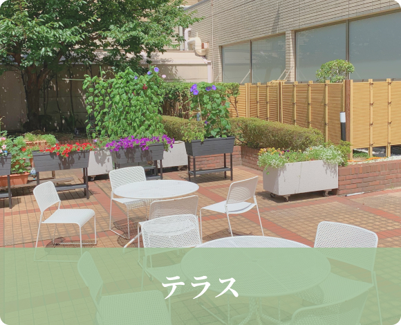
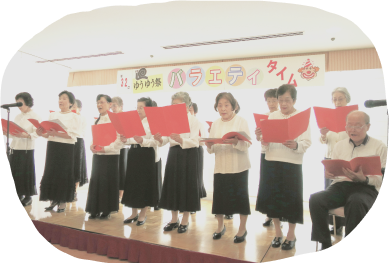
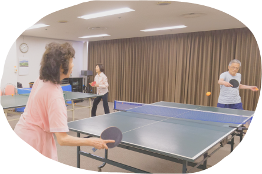
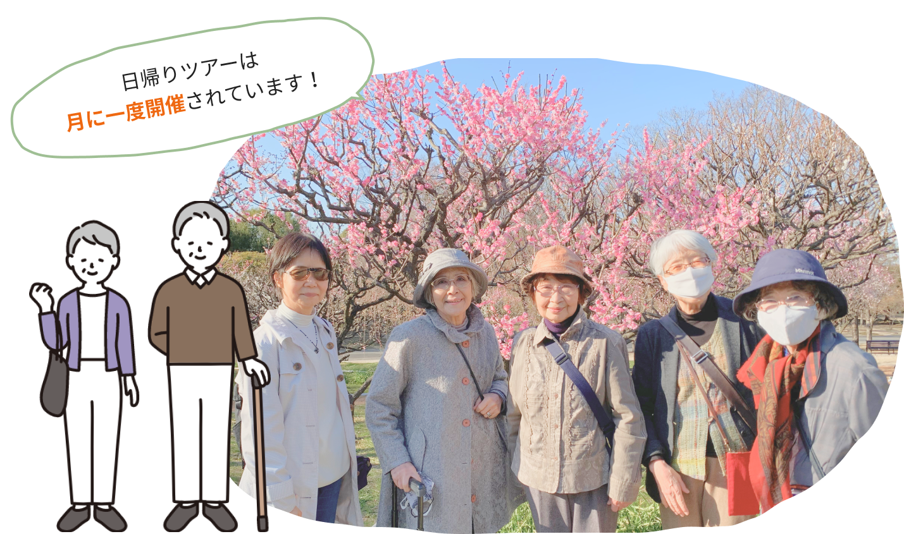

私たちがに
決めた理由
自分の「好き」を変えなくてもいい場所

終身利用の安心と京阪「守口市」駅前徒歩2分の 好アクセスでアクティブシニアのセカンドライフを応援!!
大阪・京都・神戸にアクセス良好交通至便な暮らしを満喫する


共有施設も充実しているし、
何より自分の好きに過ごせるので毎日の生活が快適です！


- 

みなさん元気な方ばかり！
趣味やイベントなど自分のペースで参加できます！
-

コーラスサークル
-

テラスでお花見
-

ゆうゆう祭りマグロ解体ショー
-

卓球サークル
囲碁サークル
-

ジムトレーニング

-

ヨガサークル
-

納涼イベント
-

ゆうゆう散歩万博ツアー
自炊も出来るけど食事が美味しくて毎日楽しみです！
-
魚の煮つけ定食
-
天ぷら定食
-
きつねうどん
-
釜めし膳
-

煮込みハンバーグ
-
特別メニュー
素材を吟味し、旬の味覚を盛り込んだ食事を施設の厨房で調理しています。「安心で美味しい」と評判のの食事をお楽しみ下さい！

介護はもちろん、施設内に診療所もある！

-

-
生涯にわたり必要なケアを提供
ご入居いただいてから生涯にわたり、お一人おひとりの心身の状態にあわせて、必要なケアを提供いたします。万が一、認知症や重度な要介護状態になったとしてもご安心ください。また、看取りや亡くなった後のこともご相談できます。
-

-
医師や看護師も常勤
敷地内には、財団が別に運営する有床の診療所(ベッド14床)があり、医師や看護師も常勤しております。人間ドック(年1回)、健康診断(年1回)、健康診査(月1回)の他、入居者の緊急時の対応、他の医療機関への紹介、健康相談などを行います。
介護・医療の共用施設も充実！だから最後まで安心！
介護と医療の両輪で最適なケアを提供